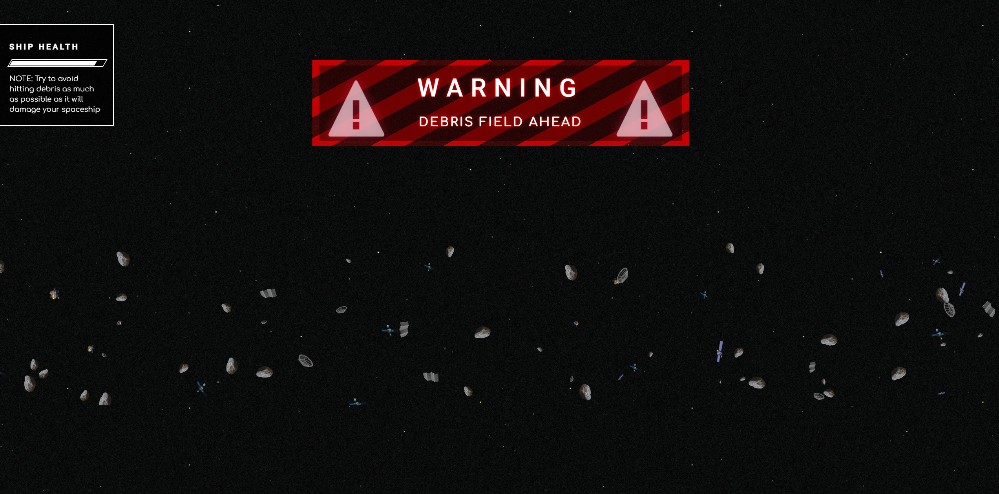
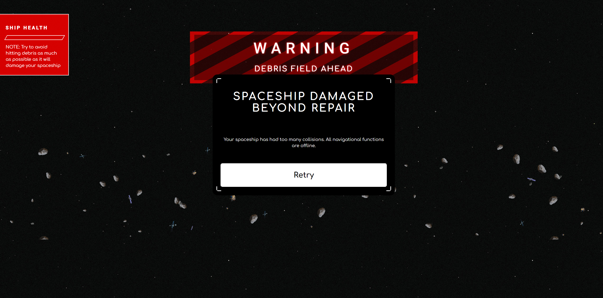
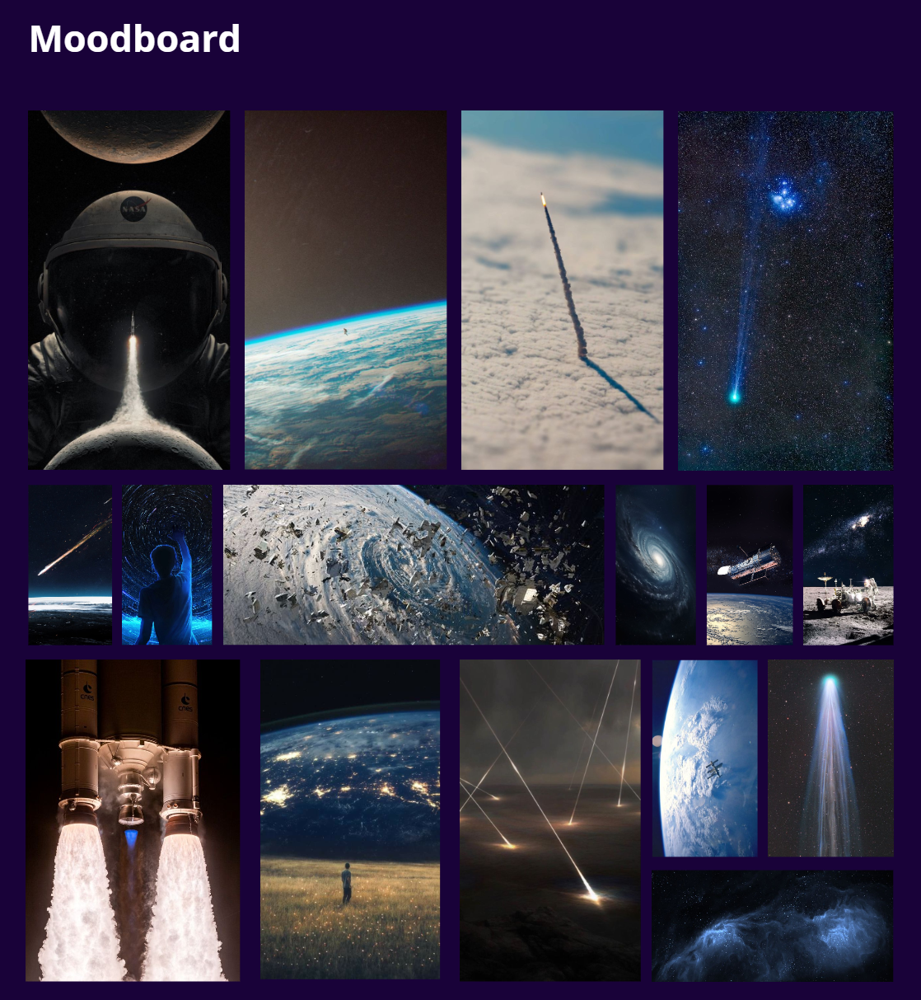
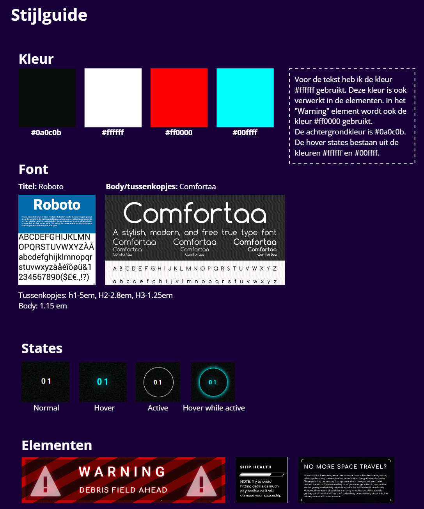
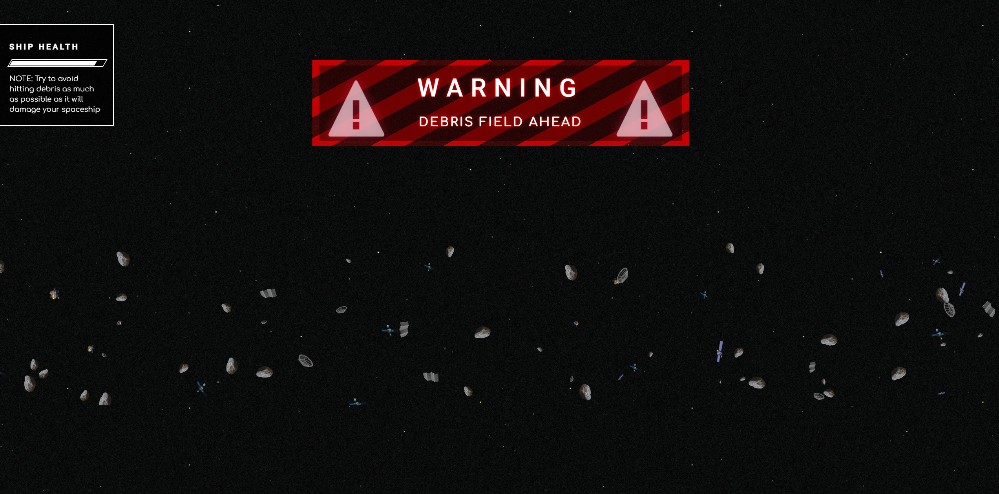
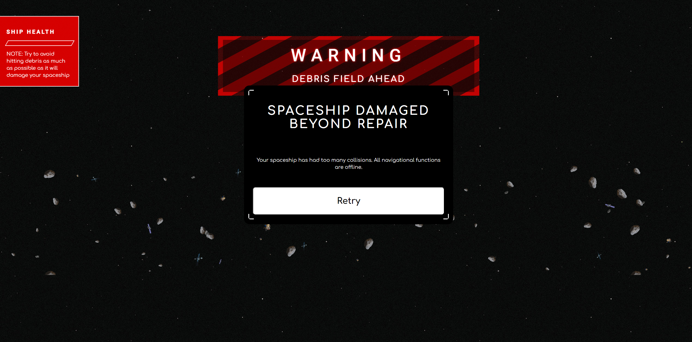
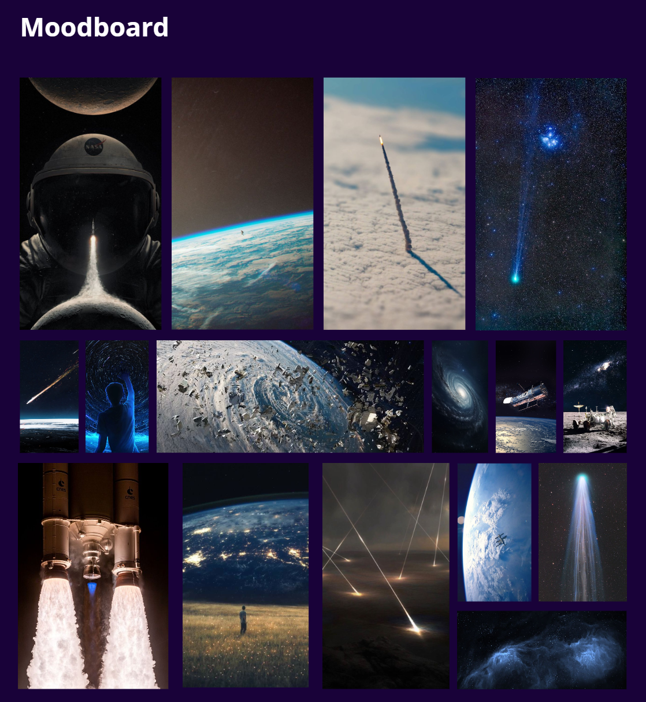
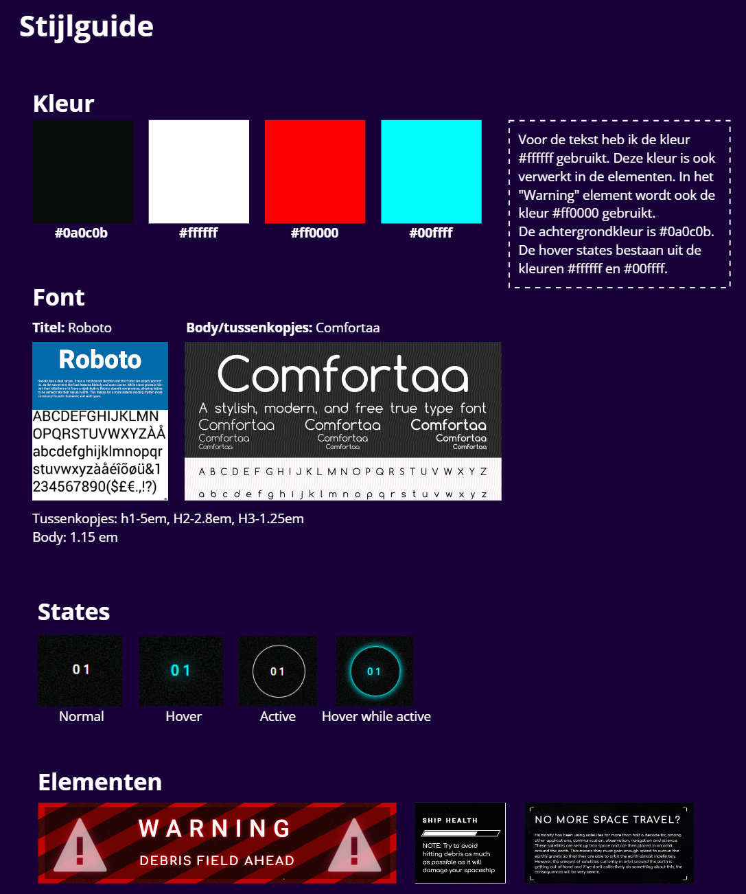

Meesterproef
- Beschrijving
For this project, I had the freedom to convey a story or message to the user/viewer through a medium of my own choice. In making this decision, I deliberately chose to code the digital design myself instead of utilizing a design tool. I did this firstly because I simply enjoy front-end coding more than purely designing and secondly because I hoped that by doing this I'd expand my proficiency in creating interative and visually interesting designs using HTML, CSS and JS.
As I've fascinated by space my entire life already I chose to use my design to inform people of the growing problem of space debris. I started by doing extensive research into the topic, as well as doing visual research and setting up inspiration and moodboards to have a good starting point. I sketched out multiple ideas for the lay-out, structure and various visual and interactive elements that could be included.
After that I spend about a week coding the one-pager. I tried to apply a consistent visual style and implemented a multitude of animations and micro-interactions to keep the page feeling fresh and interactive. I even added some gamification elements to get the user even more engaged in the topic of space debris. It was an enormously fun and educational project to work on and I'm very happy with the end result.
Afbeeldingen


 






